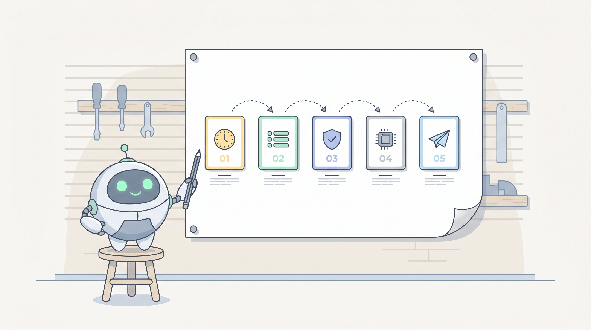
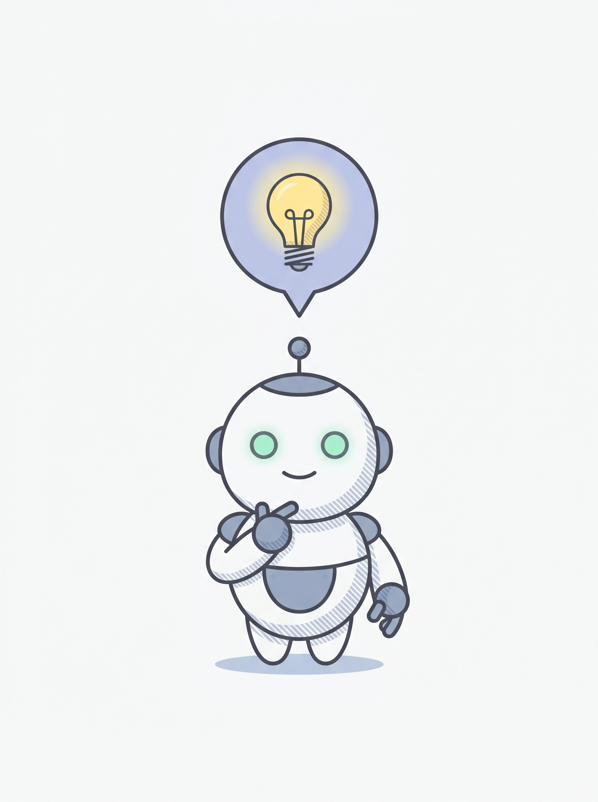
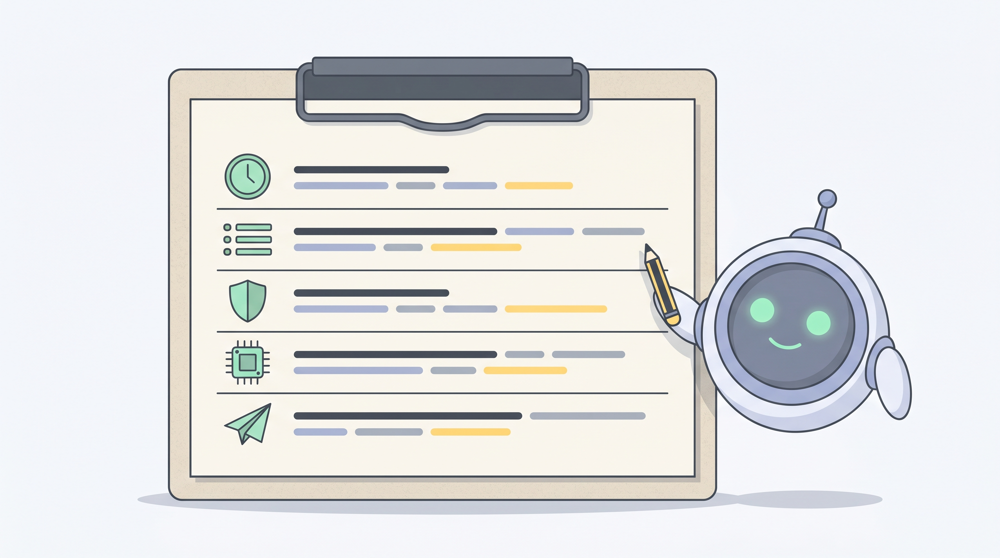
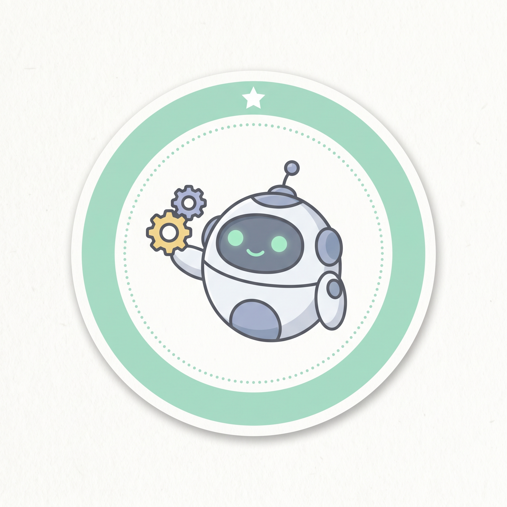

Strip the marketing language away and every agent has the same five parts. If you can describe these five things for one of your own tasks, you have an agent spec.

When does it run? Pick one: a schedule (every weekday at 07:30), an event (a new ticket arrives), or a person asking (someone clicks a button).
→ Your first agent should run on a schedule. Event-driven is a year-2 problem.
Where does it look? Name the sources in plain language: an inbox, a database, a spreadsheet, a folder.
→ If you can't name the source in one sentence, the data isn't ready yet.
When should it refuse? When the inputs look wrong, missing, or impossible. This is the part everyone skips and regrets.
→ Every guard you write here saves you from one future embarrassing post.
The Guard is the most important part. Without one, an agent will publish garbage with full confidence. Write one more guard than you think you need.
What does it actually do with the input? Summarise, compare, classify, decide, draft.
→ If you can't write the rules in plain English, you can't write them at all.

Where does the answer go? One destination, one message. A Slack channel, an email, a doc, a CRM field.
→ One destination only. Multi-channel agents fail twice as often.
Here's a "Daily Sales Briefing" agent dissected. Any business with a sales database could build this one.

Pick the repetitive thing you held in your head from Station 01. Try to write down its Trigger, Read, Guard, Compute, and Post in a single sentence each. If you can do that, you can build it. If you can't, you've found which part needs more thought.

Second sticker. Seven more to collect.